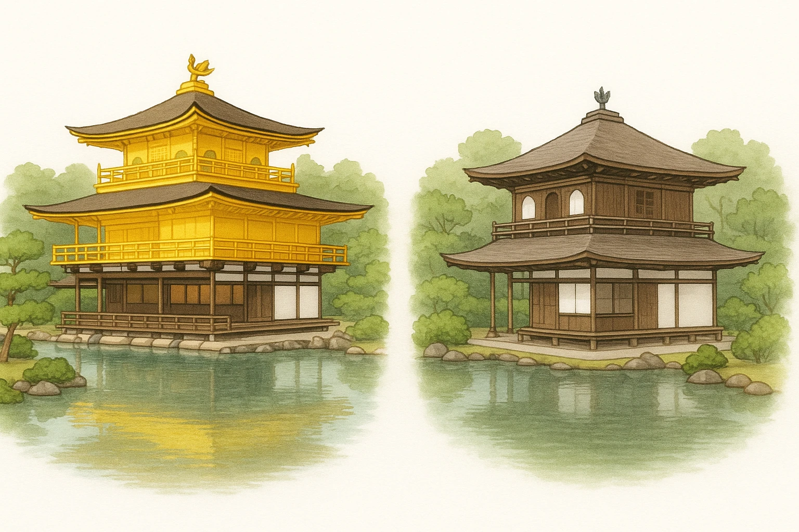

中世まとめ
最頻出の対比
金閣
と
銀閣
は、ここでしか差がつかない
金閣
銀閣
建てた将軍
①
足利義満
③
足利義政
建てた場所
②
北山
④
東山
文化の名前
北山文化
東山文化
雰囲気
華やか
簡素
・落ち着き
★ ここだけは落とすな
金＝3代将軍＝北の山
／
銀＝8代将軍＝東の山
。「ミが先＝キン、マが後＝ギン」で順番も固定。名前が1文字ちがい（義満／義政）なので要注意。

社会（歴史） ｜ 第11章 室町時代までの文化
SEED EDUCATION